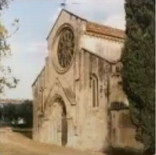
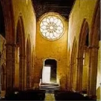
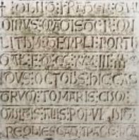

Gualdim Pais
(Braga 1118 - Tomar 1195)
D. Gualdim Pais (Gaudinus, Galdinus ou Gualdinus en latin), Grand Maître de l'Ordre du Temple au Portugal, de 1157 à 1195, a été le fondateur du château de Tomar.
Sa vie
Fils de Paio Ramires et de Gontrode Soares, il né à dans la région du Minho, au nord de Braga, en 1118.
Il est élevé au monastère Sainte-Croix de Coimbra et on le retrouve très tôt au service du futur roi, Alphonse Henriques, qu'il assiste avec ses frères d'armes, les chevaliers Mem Remires et Martin Monis, dans toutes les batailles qu'il faut livrer aux Maures pour la conquête du royaume. Il s'illustre à la prise de Santarem en 1147, puis à celle de Lisbonne, en 1149, avant de s'embarquer pour la Palestine où il participe au Siège de Gaza en 1153.
Son allure et sa prestance de guerrier et de chef rehaussent encore le prestige que lui valent ses remarquables qualités de combattant et d'organisateur. Le séjour en Orient est venu parfaire une expérience militaire déjà confirmée et quand il revient de Croisade, il sait quelle est la mission qui l'attend. En 1157, il est nommé quatrième Grand Maître de l'Ordre du Temple au Portugal, alors basée à Braga.
La vision de Saint Bernard de Clairvaux
Quelques années plus tôt, tandis qu'Alphonse Henriques se préparait à livrer la fameuse bataille de Santarem, Saint Bernard fait savoir à Gualdim Pais qu'en songe, il a vu la Sainte Vierge lui révéler la victoire du Roi.
Le Roi fait aussitôt vœu d'offrir à Clairvaux les terres et les subsides nécessaires à la construction d'une vaste abbaye s'il remporte cette victoire décisive. Exaucé, le Roi tient sa promesse et saint Bernard se rend en personne à Alcobaça, accompagné de cinq moines-architectes chargés de délimiter les terrains nécessaires à la Fondation dont le jeune souverain pose lui-même la première pierre.
Mais l'implantation d'un monastère en territoire avancé nécessite une sérieuse protection militaire et le Roi confie celle-ci aux Templiers qui possèdent déjà quelques châteaux dans la région. L'Ordre du Temple reçoit alors du Roi donation de toutes les terres situées entre Santarem et Tomar. Gualdim Pais est chargé d'élaborer la ceinture défensive qui entoure les biens de Clairvaux en même temps qu'elle renforce la protection des lignes portugaises face aux incursions arabes.
En 1160, Gualdim Pais commandite la construction du Couvent du Christ et du Château de Tomar, qui devient le Quartier Général des Templiers au Portugal ; il s'y établit en 1162. Il a également été à l'initiative de la construction des châteaux d'Almourol, d'Idanha, de Ceres, de Castelo Branco, de Monsanto et de Pombal. Il s'installe à Pombal, en 1174.
En 1190, Tomar est assiégé par les Almorávidas sous le commandement du Roi du Maroc, Yusuf Ier, mais Gualdim Pais réussit à défendre le Château contre des forces très supérieures, empêchant ainsi l'invasion du nord du Royaume par cette partie.
Il est mort à Tomar au cours de l'année 1195 (1233 de l'ère d'Espagne). Il repose dans l'église Santa Maria do Olival, à Tomar, où une stèle murale recouvre une niche qui contient les cendres du chevalier.
|  |  |  |
Par ses qualités personnelles de bravoure, par son action inlassable, par ses réalisations, Gualdim Païs représente le type idéal du Templier dont le souvenir demeure fervent en terre portugaise. Il est même, semble-t-il, celui de l'initié parfait, capable de travailler avec prescience à l'avenir de son pays et ses successeurs n'auront plus qu'à parfaire l'œuvre qu'il a commencée.
Implantation de l'Ordre du Temple au Portugal
À peine deux mois après la comparution du fondateur de l'ordre du Temple devant le concile de Troyes -dont le rôle allait être capital dans la reconnaissance et le développement de l'ordre-, l'un de ses compagnons reçoit une première donation importante au Portugal. le 19 mars 1128, la reine Thérèse, veuve du comte Henri et tutrice de leur fils Alphonse, concède au Temple le château de Soure et ses dépendances. D'autres dons viennent s'ajouter rapidement. Ils ne sont pas nécessairement le fait de puissants seigneurs mais leur nombre est important. Ainsi, entre 1128 et 1130, 19 biens fonciers, dont plusieurs domaines ruraux, sont reçus en tout ou en partie par le Temple. En juin 1145, Sancie, fille de la même reine Thérèse, et son mari, donnent au Temple le château de Longrovia, en Estrémadure portugaise, ainsi que ses nombreuses dépendances dans le terroir de la métropole Braga. Dans cette même cité, l'archevêque Jean concède à l'ordre, la même année, une maison, un hôpital pour les pèlerins ainsi que la moitié des revenus ecclésiastiques de la ville, y compris les dîmes. Parallèlement, les templiers pratiquent une politique active d'achats, qui se conjugue avec la piété des fidèles dont les legs testamentaires sont réguliers et importants.
A partir de 1143, présence permanente des Templiers au Portugal
Les premiers signes tangibles d'une présence permanente de l'ordre du Temple dans le royaume apparaissent a partir de 1143, année où un templier français, Hugues de Martone, est qualifié de procureur du Temple au Portugal. L'année suivante, la petite garnison templière du château de Soure est défaite lors d'un affrontement avec des troupes maures de Santarem. En 1147, les templiers ont leur revanche en participant a la prise de cette ville et l'Ordre obtient du roi, pour prix de ses efforts, la faculté de recevoir tous les droits perçus a Santarem a titre religieux.
A la fin des années 1150, sous le magistère de Gualdim Pais, le quatrième Grand Maître portugais du Temple dans le royaume, commence I'extraordinaire croissance de l’Ordre. Durant cette décennie, le Temple reçoit du roi un important domaine agricole au confluent du Nabao et du Zezere et y entreprend la construction du château de Tomar, appelée a devenir le siège du Temple au Portugal, puis celui de son successeur, l’Ordre du Christ. Une dizaine d'années plus tard, dans le cadre d'une vaste dotation de terres au sud du Tage mais qui demeurera lettre morte, le roi insiste pour que les ressources de I'Ordre ne soient utilisées que dans le royaume, et notamment pour y poursuivre la reconquête.